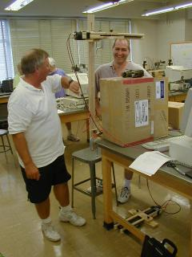

Goals
of PARTICLE Summer Institute
Welcome
to the University of Rochester's Particle summer institute.
We have put a lot of thought and work into this program to
make it suit the needs of New York teachers, and we hope you
will have a productive and enjoyable experience this summer!
We particularly hope that you will see classroom applications
in the activities you complete.
The three-week PARTICLE program will increase your knowledge
of elementary particle physics ("the Standard Model"),
particle accelerators and detectors, laboratory techniques
for observing cosmic rays, and data analysis. Traditional
workshop activities include lectures and question/answer sessions
with University of Rochester physics faculty, as well as a
tour of Cornell's CESR accelerator. In addition, we will have
a week of overlap with past participants in the program, so
you can develop connections with these teachers and learn
about their work within the program.
For the laboratory component of the institute, you will build,
calibrate, and experiment with muon telescopes that are destined
for use in your classrooms. Time is also provided to develop
laboratory exercises for student use. The ultimate goal of
this program is for students to use the telescopes as a tool
for original research using cosmic ray muons during the school
year. All teachers and their students involved in research
will be invited to participate in a special research symposium,
"PARTICLE Day", at the University of Rochester in
late spring. |